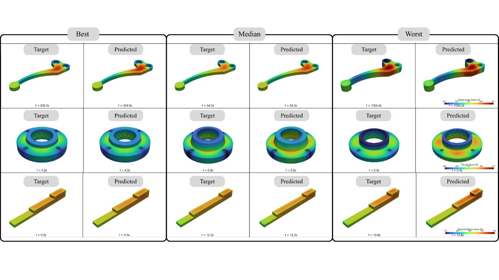

Ask anyone who has worked on a new pattern in a foundry and you will hear a familiar story: the first casting is rarely the final one. Somebody adjusts the gating, changes the pouring temperature a little, pours again, cuts the part, and checks. Eventually it works. Nobody thinks this is unusual. That is what got us interested.
The problem: a casting is often right only after a few wrong ones
Defects are costly
Shrinkage, porosity, blow holes and surface spots each mean a rejected part. By the time a defect is found, the metal has already been melted and poured, the mould has been made, and the time has been spent.
Settings rely on experience
Gating and mould design, metal velocity, and pouring and mould temperature are usually chosen from experience, then corrected by trial and error on every new pattern. Experience is valuable, but it does not transfer easily to a new alloy or an unusual geometry.
Remelting adds up
Scrap goes back to the furnace. That is more energy, more time and more cost, and less furnace capacity left for good castings.
What simulation already does well
Casting simulation software such as MAGMASOFT, ProCAST and POLYGONSOFT is excellent at showing what happens in a design you already have. You draw the part and the gating, set the process, and see filling and solidification. The limitation is in the loop around it: each design change is a new setup and a new solve.
We do not want to replace that. We want to help choose a good design to begin with, so the expensive, detailed simulation and the first real pour start from a better place. We see the two working together.
Our vision: foundation models for castings
In language and vision, “foundation model” means one model trained on broad data that can then be adapted to many tasks. For casting, we mean one family of models that learns from data across many metals, geometries and process conditions, rather than a separate tool for each case.
- Metals: ferrous and non-ferrous, starting with aluminium and moving to copper, bronze, manganese alloys and more, with the alloy treated as a process parameter.
- Recommendations: gating system and mould design, metal velocity, pouring temperature and mould temperature.
- Outcomes: fewer shrinkage, porosity and blow-hole defects; less scrap and remelting; savings in energy, time and money.
Where we actually are today
It is easy to over-promise in this field, so here is the honest version. Our first step is LM6-CastBench, an open dataset of 450 simulated LM6 aluminium sand-casting cases, accepted at the NeurIPS 2026 AIDaR Workshop. On it, a 3D U-Net cut the temperature error sharply compared with a point-wise network, from 80.7 K to 1.9 K on the stepped block.

| Today | Next |
|---|---|
| Aluminium LM6 only | Bronze, copper, other Al alloys, ferrous |
| Conduction-based thermal model | Mould filling coupled with solidification |
| Pouring and mould temperature varied | Gating and riser variations |
| No direct defect prediction | Links to shrinkage and porosity |
The honest gap
Models are only convincing once they meet real castings. That is the step we cannot take alone.
We need to check predictions against real pours, learn which defects and parameters matter most in practice, and make sure the tool fits how foundries actually work. If you run a foundry or work in one, these are the questions we would love your answers to:
- Which casting defects hurt you the most today?
- Which process settings are hardest to get right on a new pattern?
- Where on the floor would a recommendation tool actually help?
- What would you need to see before trusting a model?
Write to us through the contact page or at validuscast@gmail.com. Even a short reply helps us build the right thing.